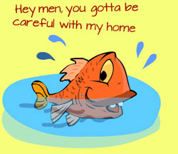
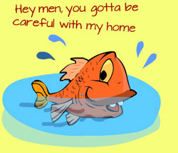

Important facts of water pollution:
 40% of America’s rivers and 46% of America’s lakes are too polluted for fishing, swimming, or aquatic life.

40% of America’s rivers and 46% of America’s lakes are too polluted for fishing, swimming, or aquatic life.

1.2 trillion gallons of untreated sewage, storm water, and industrial waste are discharged into US waters annually.
Polluted drinking waters are a problem for about half of the world’s population. Each year there are about 250 million cases of water-based diseases, resulting in roughly 5 to 10 million deaths.
In 2010, there was a huge oil spill in America by BP. Of the 400 miles of Louisiana coast, approximately 125 miles have been polluted by the oil spill. Over 1,000 animals (birds, turtles, mammals) have been reported dead, including many already on the endangered species list. Of the animals affected by the spill that are still alive only about 6% have been reported cleaned, but many biologists and other scientists predict they will die too. In November 2012, BP agreed a settlement with the US government worth $4.5bn, including a $1.26bn criminal fine.
In April 2010, The Transocean Oil Rig exploded, killing 11 workers. The disaster also damaged the Gulf of Mexico coast causing one of the biggest environmental disasters in US history. In January 2013, the company paid $400m (£248m) in criminal penalties and a $1bn civil fine after pleading guilty to violating the Clean Water Act.
In developing countries, 70% of industrial wastes are dumped untreated into waters where they pollute the usable water supply.
How the world uses freshwater:
• about 70 percent for irrigation
• about 22 percent for industry
• about 8 percent for domestic use
27% of the urban population in the developing world do not have piped water in their homes.
A lack of safe water and sanitation in cities leads to cholera, malaria and diarrhoea.
In March 2011, a very powerful earthquake in the sea (tsunami) hit the Japan coast. The sea level rose and water came into the land, damaging 4 of the 6 reactors in the Fukushima Daiichi Nuclear Power Plant.
World Health Organisation (WHO) experts confirm that there is slight increased risk of some cancer types for some people who were exposed to the radiation. These included people living in that area and some workers at the plant.
For girls exposed to radiation from the accident as infants, the report found a 4% increase above the lifetime expected risk of solid tumours and a 6% increase above that expected for breast cancer.
Boys exposed as infants are expected to have a 7% increased risk of leukaemia above that expected in the normal population.
The biggest risk was seen in thyroid cancer, which for infant girls could be up to 70% higher than expected over their lifetime.